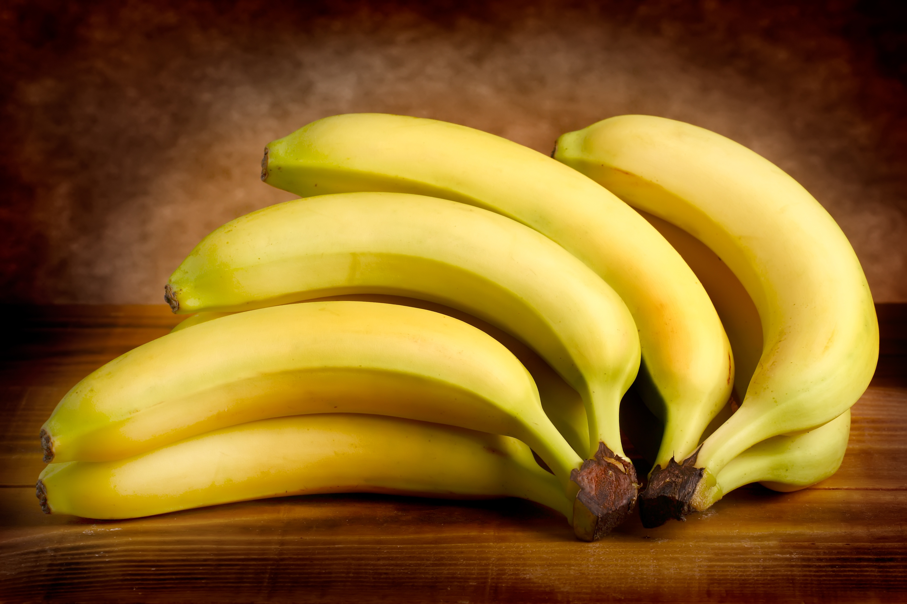

About
Health Benefits
Bananas contain essential nutrients that may enhance heart health, help manage blood pressure, and boost a person’s mood, among other benefits. While bananas can be good for health, there may be risks in some cases.
History
Bananas are thought to have been first domesticated in Southeast Asia, and their consumption is mentioned in early Greek, Latin, and Arab writings. Alexander the Great saw bananas on an expedition to India. Shortly after the discovery of America, bananas were taken from the Canary Islands to the New World, where they were first established in Hispaniola and soon spread to other islands and the mainland. Cultivation increased until bananas became a staple foodstuff in many regions, and in the 19th century, they began to appear in the markets of the United States. Although Cavendish bananas are by far the most common variety imported by nontropical countries, plantain varieties account for about 85 percent of all banana cultivation worldwide.
Chocolate Chip Banana Muffins

Ingredients:
- 1 1/2 cup all-purpose flour
- 1 teaspoon baking soda
- 1/2 teaspoon salt
- 2/3 cup sugar
- 1 cup semi-sweet chocolate chips
- 3 medium ripe bananas
- 1/3 cup melted butter
- 1 large egg
- 1 teaspoon vanilla
Directions:
- Preheat oven to 375°F and line a muffin tin with papers.
- Combine flour, salt, baking soda, and sugar in a bowl; whisk to blend.
- In a large bowl, mash bananas and mix with butter, egg, and vanilla.
- Add the dry mix to the wet mix and fold gently. Stir in chocolate chips.
- Bake for 17-20 minutes or until a toothpick comes out clean.
Banana Cookies

Fluffy Banana Cookies
Ingredients: 1 1/2 cup flour, 2 ripe bananas, 1/4 teaspoon salt, 1 teaspoon baking soda, 1/2 cup sugar...
Directions: Preheat oven to 325°F. Mix all ingredients...

Chocolate Chip Banana Cookies
Ingredients: 2 1/2 cup flour, 1 cup mashed bananas, 1/2 teaspoon salt, 1 teaspoon baking powder...
Directions: Preheat oven to 400°F. Combine dry ingredients with banana mixture...

Banana Cookies with Cream Cheese Frosting
Ingredients: 2 bananas, 3/4 cup butter, 1/4 cup sugar, cream cheese...
Directions: Preheat oven to 350°F. Mix ingredients for dough and bake...